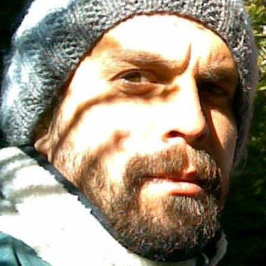

Sobre
Há algum tempo, a galera do yoDojo começou a reunir o pessoal de software para um micro-evento, onde três integrantes, da própria comunidade, trariam algo que julgavam interessante, dentro de seu contexto tecnológico, e apresentaria para os demais. Dividiram isso em episódios, disseram que seria uma parada colaborativa, totalmente gratuita e apelidaram-o de yoLab.
Local
Escola dos Servidores do Poder Judiciário. Cuiabá, Mato Grosso
Palestrantes
-

10h Pivot Soberano
Klaus Wuestefeld @klauswuestefeld
Trabalhou em par com Kent Beck, Vinicius Teles e Scott Ambler. Participou da primeira conferência internacional de XP, em 2000, na Itália. Realizou os eventos "Extreme Programming Brasil 2002 e 2004" com a presença de Beck, Ambler, Teles, Tom e Mary Poppendieck, entre outros. É o culpado pelo Prevayler e pelo manifesto da computação soberana. Lidera projetos de desenvolvimento e treinamento em XP para empresas como TV Globo, Siemens, TIM, GVT e Banco Central do Brasil.
-

11h Empreendedorismo digital no mundo das Startups
Rodrigo Louzich e Lauro Ojeda
Rodrigo é co-fundador da INEX Tecnologia e do Portal Cabeça de Pacu. Presidente do StartupMT, grupo de empreendedores digitais de Mato Grosso. Analista de Sistemas por formação e especialista em Marketing. Empreendedor digital, possui 15 anos de experiência no mercado de Internet e mais de 150 projetos publicados na Internet. Abriu sua primeira empresa de Internet aos 18 anos, e participou da criação dos principais portais de entretenimento do estado de Mato Grosso. Lauro é proprietário da USE Coworking escritório compartilhado, empreendedor, DBA Oracle e vice presidente do StartupMT. Formado em computação pela FIAP-SP e mestre em empreendedorismo e inovação pela Universidade Técnica Real da Suécia, Lauro foi premiado pelo Ministério de Comércio Exterior daquele país por excelência em empreendedorismo em 2011. Na área técnica, detém diversas certificações de alto nível. Trabalhou no Brasil e no exterior como consultor em banco de dados em empresas de grande porte como IBM e Baxter.
-
14h NoSQL: Onde vivem e como se alimentam?
Alvaro Viebranz @alvinhuuu
Recém formado pela UFMT, com estudos na área de banco de dados NoSQL e buscas textuais, focando nos diferentes tipos de modelos de dados que podem ser utilizados para complementar o modelo relacional que conhecemos. Possui experiência com Java e mais recentemente com Ruby e NodeJS. Atualmente trabalha como Analista de TI na Secretaria de Fazenda na área de Business Intelligence.
-
15h Cases de startups regionais
StartupMT
Grupo de empreendedores digitais que busca promover a discussão e a troca de ideias sobre as Startups de Mato Grosso.
-
16h Desenvolvimento de Jogos utilizando Unity 3D
Silvair Fernandes Frazão @silvair_frazao
Graduado em Ciência da Computação na UNEMAT e pós graduado em Desenvolvimento de jogos Digitais pela PUCRS, trabalhou como Animador de Personagens na Aquiris Game Studio (Porto Alegre-RS), foi Professor no curso de jogos digitais da FEEVALE (Novo Hamburgo-RS), atualmente trabalha como programador e artista 3D na criação de jogos digitais.
Agenda
| Horário | Slot | Descrição |
|---|---|---|
| 10h | Pivot Soberano Objective Solutions | A história da reviravolta no Sneer, o projeto pioneiro de computacão soberana. |
| 11h | Empreendedorismo digital no mundo das Startups INEX Tecnologia e USE Coworking |
Conceitos básicos sobre o mundo das startups, números e dados sobre empreendedorismo no Brasil e formas de empreender. |
| 14h | NoSQL: Onde vivem e como se alimentam? SEFAZ-MT | Apresentação com objetivo de mostrar o porque do surgimento de novas soluções de armazenamento e processamento de dados para suportar uma nova geração de aplicações. Será mostrado os diferentes tipos de bancos de dados não relacionais (NoSQL) e diferentes situações onde podem ser aplicados. Também será mostrado um passo a passo de como montar um caso prático utilizando essas tecnologias. |
| 15h | Cases de startups regionais StartupMT | Como e porquê algumas startups bombam e outras afundam? |
| 16h | Desenvolvimento de Jogos utilizando Unity 3D FIEMT | Uma breve apresentação sobre a ferramenta, explicando os principais recursos utilizados no desenvolvimento de jogos digitais, vantagens e desvantagens de utilizar a Unity, ferramentas de apoio, profissionais envolvidos, fluxo de trabalho, asset store, etc. |